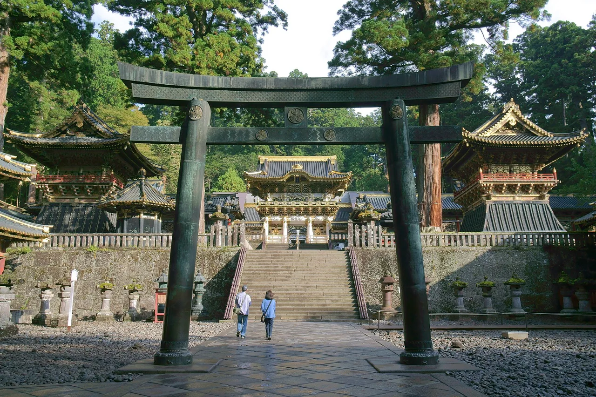

Tochigi คู่มือท่องเที่ยวสำหรับผู้เรียนภาษาญี่ปุ่น
สรุป
Tochigi อยู่ห่างจาก Tokyo ประมาณ 100 กิโลเมตร ทางเหนือ เป็นบ้านเกิดของศาลเจดีย์และวัดที่ส่องทองคำของ Nikko ซึ่งเป็นมรดกโลก UNESCO และอุทยานแห่งชาติโดยรอบมีน้ำตก ทะเลสาบ และใบไม้ร่วง เมืองหลวง Utsunomiya ขึ่นชื่อทั่วญี่ปุ่นว่าเป็นเมือง gyoza (dumplings) ที่สำคัญ
📍 ชม:
Nikko Toshogu Shrine (日光東照宮) · 🥢 ลอง:
Utsunomiya Gyoza (宇都宮餃子) ·
แหล่งที่มา
บ้านเกิดของศาลเจ้าอันวิจิตรงดงามและน้ำตกของนิกโกะ

Nikko Toshogu — photo by Koichi Sato, CC BY-SA 4.0, via Wikimedia Commons
🍜 อาหาร ▰▰▱▱▱ 🏯 วัฒนธรรม ▰▰▰▰▱ 🏙 เมือง ▰▰▰▱▱ 🚄 การเดินทาง ▰▰▱▱▱ 🌿 ธรรมชาติ ▰▰▱▱▱
🥢 ลอง: Utsunomiya Gyoza (宇都宮餃子) · 📍 ชม: Nikko Toshogu Shrine (日光東照宮)
🗣 気をつけてください ki wo tsukete kudasai
อัญมณีที่สำคัญที่สุดของจังหวัด Tochigi คือ Nikkō ซึ่งเต็มไปด้วยศาลเจ้าสมัยเอโดะที่หรูหราตั้งอยู่ท่ามกลางป่าสน ทะเลสาบ และน้ำตก เป็นหนึ่งในการเดินทางวันเดียวที่ได้รับความนิยมมากที่สุดจาก Tokyo
ต้องไปดู
★ Nikko Toshogu Shrine (日光東照宮)★ Nikko World Heritage complex - Rinnoji, Futarasan & Shinkyo Bridge★ Kegon Falls & Lake Chuzenji (華厳ノ滝・中禅寺湖)💎 Mashiko pottery town & hands-on workshops (益子焼)💎 Oya History Museum underground stone quarry (大谷資料館), Utsunomiya
- ศาลเจ้า Nikkō Tōshō-gū (UNESCO)
- น้ำตก Kegon และทะเลสาบ Chūzenji
- สวนสนุก Edo Wonderland
- ดอกวิสทีเรียของ Ashikaga Flower Park
PR วางแผนที่พัก
ลิงก์บางตัวเป็นลิงก์พันธมิตร เราอาจได้รับค่าตอบแทนโดยคุณไม่เสียค่าใช้จ่ายเพิ่ม เราแนะนำเฉพาะบริการที่เราใช้เอง
ต้องกิน
★ Utsunomiya Gyoza (宇都宮餃子)★ Sano Ramen (佐野ラーメン)★ Tochiotome strawberries (とちおとめ)💎 Mimi Udon (耳うどん)💎 Shimazaki Brewery cave-aged sake, Nasu-Karasuyama (島崎酒造)
Utsunomiya เป็นเมืองหลวงของ gyōza (饺子) ของประเทศญี่ปุ่น
การเดินทางและช่วงเวลาที่ดีที่สุด
การเดินทาง: Nikkō อยู่ห่างจาก Tokyo ประมาณ 2 ชั่วโมง (ทางรถไฟ Tōbu จาก Asakusa หรือ shinkansen + เปลี่ยนรถ)
ช่วงเวลาที่ดีที่สุด: สิ้นเดือนเมษายน-พฤษภาคม เพื่อชมดอกวิสทีเรีย; ตุลาคม-พฤศจิกายน เพื่อชมใบไม้เปลี่ยนสีที่สวยงามของ Nikkō
เรียนภาษาญี่ปุ่น
おすすめは何ですか？
Osusume wa nan desu ka? — "饺子ทอดกระทะ — เอกพิเศษของ Utsunomiya"
คำท้องถิ่น
餃子
gyōza — 饺子ทอดกระทะ — เอกพิเศษของ Utsunomiya
💡 รู้ไว้ดีสีใบไม้ของ Nikkō ในฤดูใบไม้ร่วงดึงดูดฝูงชนมากมาย — เริ่มต้นตั้งแต่เช้าและพิจารณาวันธรรมชาติ
PR วางแผนที่พัก
ลิงก์บางตัวเป็นลิงก์พันธมิตร เราอาจได้รับค่าตอบแทนโดยคุณไม่เสียค่าใช้จ่ายเพิ่ม เราแนะนำเฉพาะบริการที่เราใช้เอง